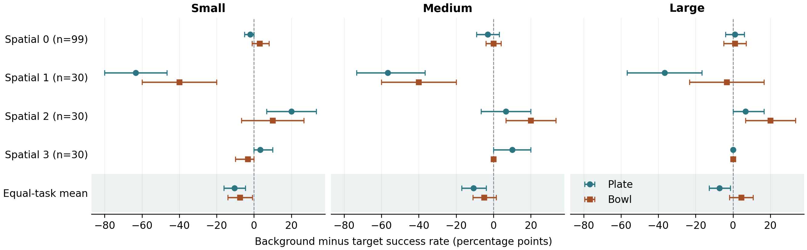

II2202 · KTH Royal Institute of Technology
Visual Occlusion Robustness of SmolVLA under Destination, Grasp-Object and Background Masking in LIBERO-Spatial
When a robot moves a bowl onto a plate, does it matter which region disappears from its camera view? We tested the destination plate on 400 starting states and the grasped bowl on 189 of those same states.
Compare the camera conditions ↓
Protocol
Same starting state, seven camera conditions
We evaluated a frozen SmolVLA checkpoint on four LIBERO-Spatial bowl-to-plate tasks. Each of 100 generated states per task ran in all seven conditions, for 2,800 valid rollouts. The intervention modified the external camera only. Task success came from the simulator predicate within 280 steps.
Unmasked external camera input.
Gray squares cover at least 25%, 50%, or 75% of the visible destination plate at reset.
Each square has the same pixel area as its paired target mask. The initial background area contains table pixels.
Each square stays fixed in image coordinates for the entire rollout. The three percentages describe coverage of the plate, not the full image.
Rollout viewer
Compare rollouts from the same initial state
Spatial 1 asks the robot to pick up the black bowl next to the ramekin and place it on the plate. State 008 is the lowest-numbered Spatial 1 state with all 13 conditions in the paired sample. Compare each bowl mask with the background mask directly below it. States 096, 026 and 072 illustrate the original seven conditions. Matching step numbers aligns elapsed actions across conditions. The robot can reach different manipulation stages at the same step.
Gray squares reconstruct the saved mask location on the external camera footage.
Loading videos…
Inspect what crosses the mask
Pause or jump to a step, then switch from Gray overlay to Outline. The box stays in place and the original pixels become visible.
Frame 0 shows the reset. Frame n shows the scene after action n. Shorter clips hold their final frame.
Destination plate masks
Plate-matched background masks
Grasp-object masks
Bowl-matched background masks
Saved first model frames for the selected state
These are the saved masked.png images. The video overlays are reconstructed from external-camera recordings. Model input was saved independently at the first frame only.
Formal outcomes
Where the mask was placed mattered
Across the four fixed tasks, equal-area background masks yielded lower success than target masks at each size. Spatial 1 drove this direction. Spatial 1 used a different background coordinate, so this experiment cannot isolate its effect from task identity.
Background minus target success rate. Pointwise percentile intervals use 5,000 paired bootstrap draws within tasks.
| Task | Baseline | T1 | T2 | T3 | B1 | B2 | B3 |
|---|---|---|---|---|---|---|---|
| Spatial 0 | 85 | 88 | 84 | 82 | 86 | 81 | 83 |
| Spatial 1 | 49 | 65 | 68 | 50 | 13 | 20 | 13 |
| Spatial 2 | 87 | 86 | 81 | 93 | 96 | 94 | 94 |
| Spatial 3 | 96 | 95 | 93 | 99 | 99 | 100 | 98 |
| Equal-weight mean | 79.25 | 83.50 | 81.50 | 81.00 | 73.50 | 73.75 | 72.00 |
The exploratory change in the gap from small to large was +1.00 pp (95% CI [−3.50, +5.50]). The interval permits changes in either direction. The result is specific to these tasks, camera conditions and checkpoint.
Exploratory extension
What changes when the square starts on the bowl?
We centered the square on the instructed black bowl at reset. O1, O2 and O3 covered at least 25%, 50% and 75% of its visible pixels. Each OB control used the same square dimensions as its O partner at the original background anchor. The square stayed fixed while the bowl could move.
After observing the plate results and interim extension outcomes, we reduced collection time by retaining all 99 eligible Spatial 0 states and the first 30 distinct states in the randomized order for each remaining task. Two original states had no visible bowl pixels at reset. The 189 complete six-condition blocks yielded 913 successes and 221 timeouts. We archived another 90 rollouts outside this sample.
Spatial 1 had a 40-point advantage for bowl masking over its background control at the two smaller sizes. Spatial 2 favored the background control at every size. Each task carries equal weight in the mean. Pointwise intervals use 5,000 paired bootstrap draws within tasks.
| Task | States | Baseline | O1 | O2 | O3 | OB1 | OB2 | OB3 |
|---|---|---|---|---|---|---|---|---|
| Spatial 0 | 99 | 85.86 | 84.85 | 84.85 | 83.84 | 87.88 | 84.85 | 84.85 |
| Spatial 1 | 30 | 46.67 | 60.00 | 63.33 | 46.67 | 20.00 | 23.33 | 43.33 |
| Spatial 2 | 30 | 83.33 | 73.33 | 76.67 | 76.67 | 83.33 | 96.67 | 96.67 |
| Spatial 3 | 30 | 96.67 | 100.00 | 100.00 | 100.00 | 96.67 | 100.00 | 100.00 |
| Equal task mean | 189 | 78.13 | 79.55 | 81.21 | 76.79 | 71.97 | 76.21 | 81.21 |

At the large size, the bowl gap exceeded the plate gap by 11.67 percentage points (95% CI [3.48, 20.18]). The large bowl square had a median area of 2,401 pixels, compared with 4,356 for the plate. The families were also collected in separate batches. These differences limit what the contrast can tell us about object identity.